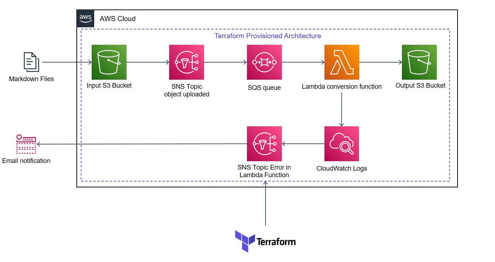
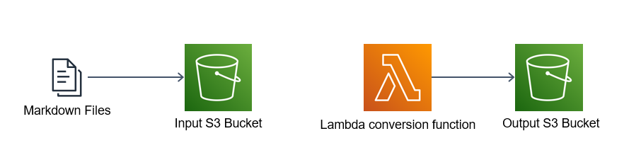
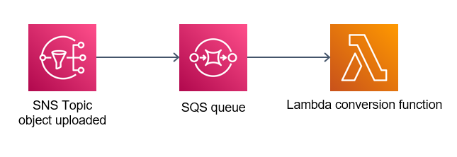
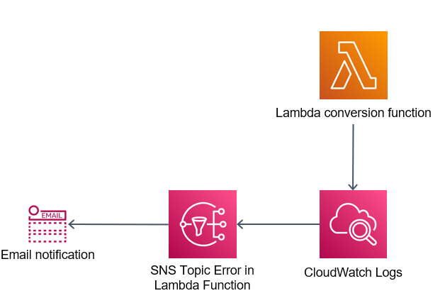

Implementação
Nessa página da documentação nós vamos entender como o código terraform fora implementado para a construção do projeto.
Terraform
Terraform é uma ferramenta de infraestrutura como código (IaC) para provisionar e gerenciar recursos de forma automatizada e escalável. Gerenciado pela empresa HashiCorp, o terraform possui integração com diversos providers, incluindo a AWS que será o provider utilizado nesse projeto. Toda a infraestrutura da aplicação está implementada em terraform:

A construção de um componente em terraform é feita da seguinte maneira:
O código Terraform do projeto está localizado em um único arquivo, terraform/main.tf. Neste guia, vamos analisar detalhadamente como cada componente dentro do código está configurado e como cada um deles se interliga com os demais.
S3
O Amazon S3 (Simple Storage Service) é um serviço de armazenamento de objetos altamente escalável fornecido pela AWS. Armazena arquivos e oferece alta disponibilidade, escalabilidade automática e recursos de segurança avançados. É amplamente utilizado para armazenamento de dados, backup e hospedagem de sites.
No nosso projeto nós fazemos a utilização de dois buckets S3, um como input de arquivos markdown, e outro como output do função de conversão Lambda, que armazenará os arquivos HTML.

Para a criação desses buckets fora construído o seguinte código:
Para que o upload de um novo arquivo consiga realizar o trigger das etapas subsequentes, nós precisamos ser alertados quando a ação de upload seja realizada. Portanto, fora adicionado a parte de código abaixo:
Observe que na linha '2' fora especificado o bucket que queremos monitorar, e na linha 6 as ações em que esse alerta deve ser disparado, que são as ações de Put e Post. Com isso o nosso bucket já está configurado para ativar os processos seguintes.
Com isso, nosso código para a configuração do S3 ficaria assim:
SNS
O Amazon Simple Notification Service (Amazon SNS) é um serviço gerenciado que fornece entrega de mensagens de editores para assinantes (também conhecido comoProdutoreseConsumidores). Os editores se comunicam de maneira assíncrona com os assinantes produzindo e enviando mensagens para um tópico, que é um canal de comunicação e um ponto de acesso lógico. Os clientes podem se inscrever no tópico SNS e receber mensagens publicadas usando um tipo de endpoint compatível, como Amazon Kinesis Data Firehose, Amazon SQS,AWS Lambda, HTTP, e-mail, notificações push móveis e mensagens de texto móveis (SMS).
Para a construção do SNS, fora preciso a construção de uma policy. Uma policy é uma série de configurações que permite fornecer acessos a componentes de maneira regrada. Para o caso do SNS, sua policy permite que a notificação de upload do bucket S3 de input, possa escrever no tópico do SNS.

No código abaixo podemos ver a policy criada. Nas linhas '10' e '11' podemos ver a ação permitida ("SNS:Publish" -> ação de publicar menssagem no tópico SNS) e a qual recurso estamos permitindo essa ação seja feita ("sns-CloudConvertR" -> Tópico SNS que está conectando o nosso bucket de input ao SQS).
Observer que a policy possui um campo de "condition", o que demonstra que essa ação só pode ser performada caso a condição seja satisfeita. Nessa caso a condição está restringindo os elementos que podem realizar essa ação, no caso desse projeto, ao bucket de input de arquivos
Com a policy criada podemos criar o nosso tópico SNS e integrar essas permissões a sua policy:
Outra funcionalidade implementada foi a notificação por email quando um arquivo novo é inserido no projeto. Para que essa informação consiga chegar ao email, é necessário inscrever o email nesse tópico SNS. Para isso fora implementado o código abaixo:
Com isso nosso código para configuração do SNS fica assim:
SQS
O Amazon Simple Queue Service (SQS) permite que você envie, armazene e receba mensagens entre componentes de software em qualquer volume, sem perder mensagens ou precisar que outros serviços estejam disponíveis.
Nesse projeto o SQS está responsável por receber as novas notificações do tópico SNS e repassá-las para a função Lambda.

Para a criação da fila SQS fora implementado o seguinte código:
Também fora implementado uma policy para permitir que o tópico SNS conseguisse enviar mensagens para a fila SQS. Nas linhas '11' e '12' está especificado a ação permitida e o recurso para o qual essa ação pode ser aplicada, respectivamente. Na linha '17' podemos verificar o recurso a quem essas permissões estão sendo fornecidas, no caso do nosso projeto, o recurso é o tópico SNS.
Para adicionar a policy ao SQS:
Lambda Function
O AWS Lambda é um serviço de computação sem servidor e orientado a eventos que permite executar código para praticamente qualquer tipo de aplicação ou serviço de backend sem provisionar ou gerenciar servidores.
A função Lambda, dentro do nosso projeto, tem a funcionalidade de realizar a conversão dos arquivos em markdown para HTML. Ela receberá uma mensagem vinda do SQS que conterá, no seu corpo da mensagem, o nome do arquivo que foi realizado o upload e o nome do bucket proveniente. Posteriormente analisaremos detalhadamente o código implementado em Python para realizar essa conversão.

Para a criação da função Lambda foi necessário configurar algumas políticas de acesso como receber os arquivos via fila SQS, acesso ao manuseio de arquivos do S3 e permissões básicas de execução para a função. No código abaixo está representado a política da função e cada uma das roles que possibilitam as ações listadas acima. A diferença entre funções IAM (Roles) e políticas (Policies) na AWS é que uma função é um tipo de identidade IAM que pode ser autenticada e autorizada a utilizar um recurso da AWS, enquanto uma política define as permissões da identidade IAM.
Para a criação da porópria função Lambda foi preciso criar uma pasta zipada com o código em python que performará a conversão dos arquivos. Para realizar a ação de zipar a pasta temos o código abaixo:
Nossa função faz uso da biblioteca "markdown", que é uma biblioteca especifica e não nativa do python para realizar a conversão dos arquivos, portanto, é preciso criar uma layer que conterá os requerimentos dessa biblioteca. É preciso também que todos esses requerimentos estejam em uma pasta .zip, então foi rodado o seguinte comando para a criação da pasta:
E para a subida dessa layer via terraform temos:
Por fim, nosso código para a criação da Lambda ficou assim:
CloudWatch
O Amazon CloudWatch coleta e visualiza logs, métricas e dados de eventos em tempo reale nós vamos utilizá-lo para verificar possíveis erros de execução da função Lambda.

O código para a criação do CloudWatch foi implementado da seguinte maneira:
O objetivo do CloudWatch é identificar todos erros "evento" (metric_name) e sinalizar quando cada um deles acontecer. Para isso fora escolhida a métrica de "soma" (statistic) e o "limite" (threshold) de 0, assim toda vez que um erro acontecer (a soma será maior que 0) o CloudWatch entrará em estado de alerta.
É preciso também definir um recurso para observar quando o CloudWatch entra em estado de alerta, para isso nós estamos utilizando um tópico SNS (alarm_actions). Toda vez que estiver um erro na função, uma nova mensagem aparecerá no tópico SNS.
É preciso também definir um recurso para observar quando o CloudWatch entra em estado de alerta, para isso nós estamos utilizando um tópico SNS (alarm_actions). Toda vez que estiver um erro na função, uma nova mensagem aparecerá no tópico SNS.
Vamos agora criar o tópico SNS que receberá as notificações do CloudWatch e subscrever um email no mesmo para que sejamos notificados toda vez que um erro ocorrer. Lembre-se de configurar a policy para permitir que o CloudWatch tenha permissões para criar novas mensagens no tópico, igual fizemos com o tópico SNS anterior, em que configuramos uma permissão para os eventos de upload no S3 pudessem escrever mensagens no tópico.
Com isso, nosso código final para a criação do CloudWatch ficou da seguinte maneira:
Python
Nosso código Python é responsável por pegar o arquivo novo no bucket de input, transformá-lo em HTML e colocá-lo no bucket de output. Vamos ver passo a passo como podemos fazer isso.
Nosso códiga utilizará 3 bibliotecas.
- json: Para decodificação da mensagem do SQS;
- boto3: Para realizar a leitura e escrita de arquivos nos bucket de input e output;
- markdown: Biblioteca para conversão de arquivos markdown para HTML (essa biblioteca não é nativa e, como explicado anteriormente no tópico de Lambda, foi colocada dentro da Layer)
Nossa função tem como input o evento gerado (mensagem SQS) e o contexto (não iremos utilizar esse argumento na função). Vamos então criar nossão função com esses conceitos iniciais em mente, com isso temos:
import json
import boto3
import markdown
def CloudConvertR(event, context):
client = boto3.client('s3') # (1)!
- Criação do client que realizará a leitura e escrita nos buckets S3.
Ao receber a mensagem via SQS de que um novo arquivo foi adicionado no bucket, o python decodifica a mensagem em busca do nome do arquivo novo e do bucket de input. Isso pode ser visto nas linhas 13 e 14:
Podemos ainda definir as variáveis de output. O bucket de output é sempre o mesmo e o nome do arquivo de saída é o mesmo do arquivo de entrada mudando apenas sua extensão para HTML:
Com essas variáveis em mãos já podemos iniciar a leitura e escrita dos arquivos. Para leitura vamos utilizar a função get_object() do boto3:
- A função
get_object()retorna uma string de bytes, portanto, devemos decodificar ela para realizar a conversão.
Para realizar a conversão vamos utilizar a biblioteca "markdown":
put_object():
Por fim vamos retornar o status_code 200 para a nossa Lambda para que ela saiba que tudo ocorreu da maneira correta. Com isso, nosso código final ficou da seguinte maneira: